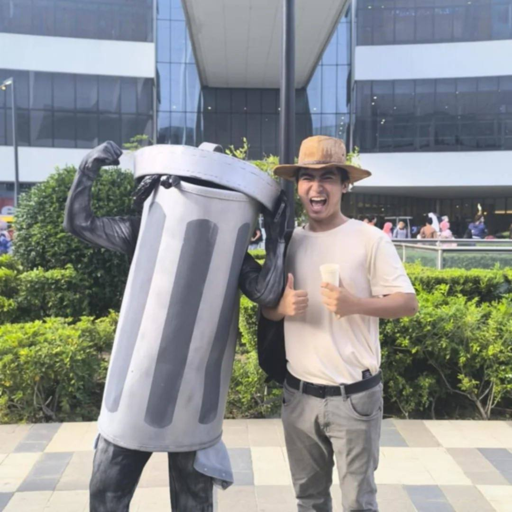
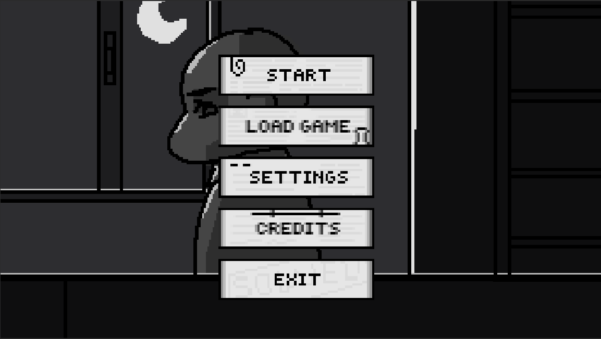
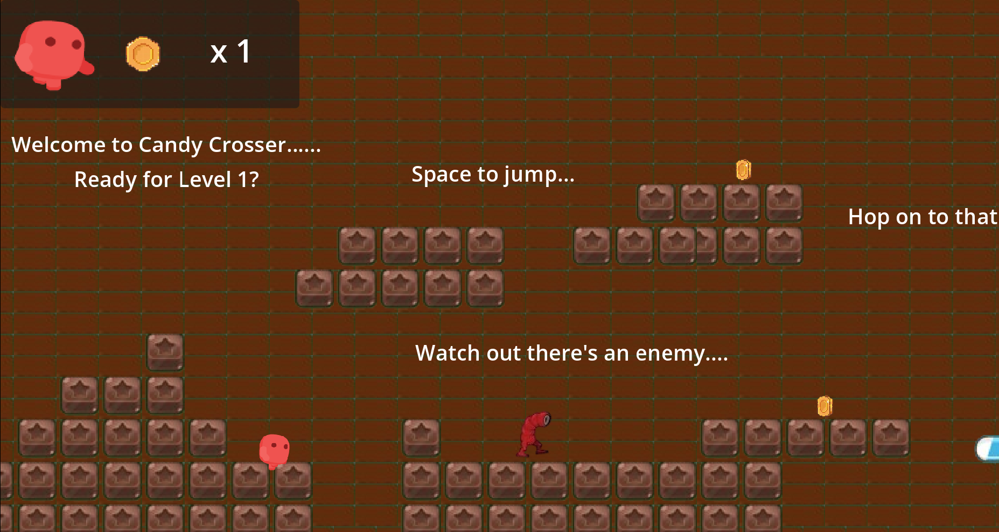
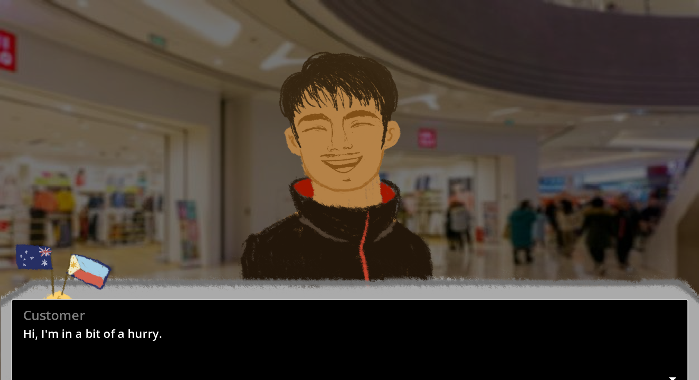

↳ player one / game developer
I make games
with strange little hearts.
I’m Lloyd, a systems-minded game maker turning messy ideas into playful worlds, tactile mechanics, and the occasional suspiciously emotional toaster.

02 / what i do
Playable ideas,
fully charged.
A small selection from the lab. Click a game to change the channel.

01 / Detective Rivera2D / Visual Novel / PC
Detective Rivera
A mystery investigation game set in the streets of Manila, where a detective must uncover the case of a missing girl named Aurora.

02 / Candy Crosser2D / Platformer / PC
Candy Crosser
A cute platformer where you jump through candy blocks and avoid monsters.

03 / Gift Wrapper2D / Visual Novel / PC
Gift Wrapper
A short visual novel about a guy having 5 days before his visa expires, wrapping gifts until he reaches home in the Philippines
03 / how i work
From brain static
to button feel.
My process has fewer ceremonies and more sticky notes. The good kind of chaos.
- 01✦
Find the fun
Prototype the one interaction that makes the whole idea worth chasing.
- 02✦
Make it feel alive
Layer in feedback, sound, juice, and the tiny surprises players remember.
- 03✦
Invite weirdos in
Test early, listen closely, and let real players break the thing beautifully.
favorite
instruments
hover a tool. it may have opinions.
04 / reach me
Let’s make
something odd.
Have a game, a story, or a beautiful little problem? Drop me a line. My inbox is haunted, but friendly.